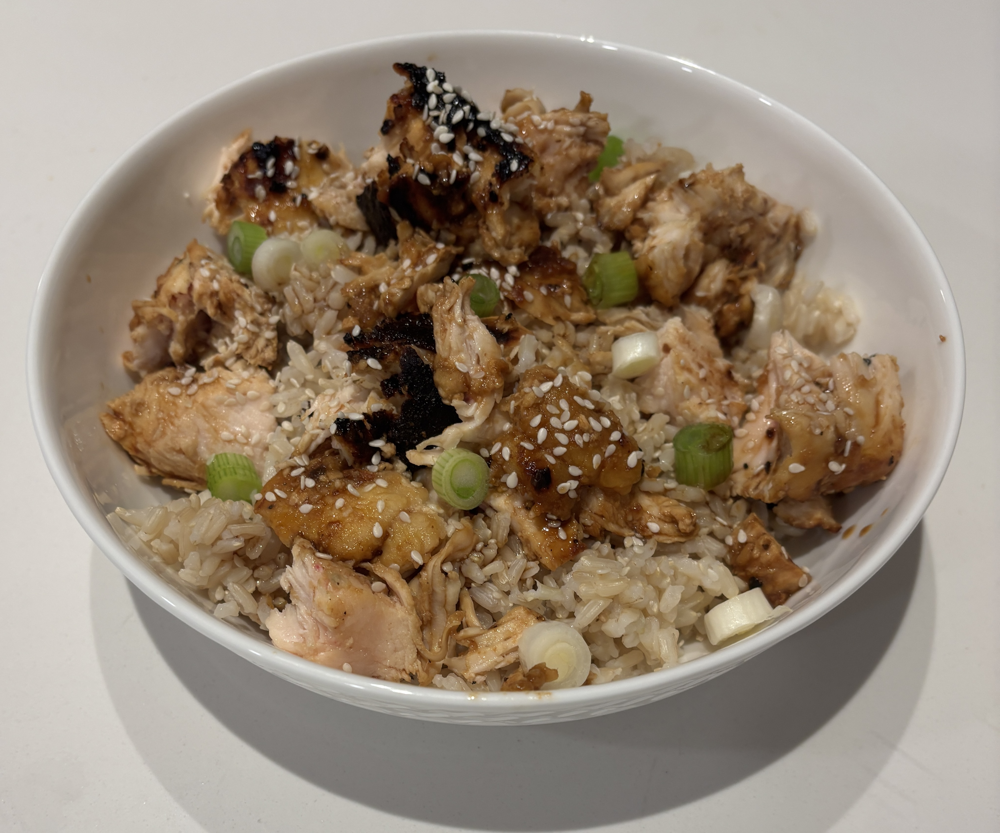

Home
Honey Garlic Chicken

Ingredients
- 2 lbs boneless skinless chicken breasts
- salt and pepper
- 2 tablespoons flour
- 1 tablespoon soy sauce
- 1 tablespoon white vinegar
- 2.5 tablespoons honey
- 1 tablespoon olive oil
- 2 tablespoons butter divided
- 2 tablespoons minced garlic
- Chopped green onions
- Sesame seeds
Steps
- Cut raw chicken into 1 inch cubes
- Put the chicken in a bowl and cover with salt and pepper and stir
- Add two tablespoons of flour and stir until the chicken is fully coated
- In a small bowl, combine 1 tablespoon of soy sauce, 1 tablespoon of white vinegar, and 2.5 tablespoons of honey to create your sauce.
- On medium heat add 1 tablespoon of olive oil and 1 tablespoon of butter to a pan
- Place the chicken in the pan cooking the pieces about 4-5 min per side
- Move the chicken to the edge of the pan and in the middle add 1 tablespoon of butter, 2 tablespoons of garlic and sautee for 30s or until fragrent
- Add the sauce to the pan and turn the heat to medium-low and coat the chicken in the sauce. Continue cooking until the sauce thickens about 2-3 min
- Serve with rice, add chopped green onions and sesame seeds